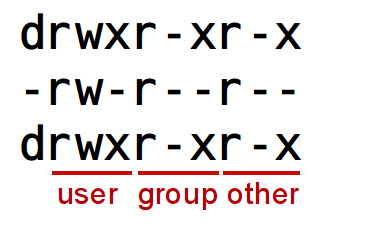
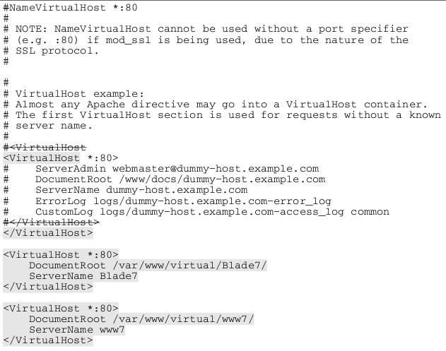

Session 2 User Mgmt, Storage, and filesystems
User Administration with Config Files
- /etc/passwd
- World-readable file of user information
- /etc/shadow
- Restricted-access file with password and expiry info.
- /etc/group
- World-readable file of group information
- /etc/gshadow
- Restricted-access group password, admin, membership info
Important
If editing directly, vipw and vigr should be used.
Structure of /etc/passwd
Name:Password:UID:GID:Comments:Homedir:Shell
Sample Contents
$ cat /etc/passwd
root:x:0:0:root:/root:/bin/bash
sshd:x:74:74:Privilege-separated SSH:/var/empty/sshd:/sbin/nologin
ntp:x:38:38::/etc/ntp:/sbin/nologin
gdm:x:42:42::/var/gdm:/sbin/nologin
scott:x:500:500:Scott Purcell:/home/scott:/bin/bash
The "x" in the password field indicates that the actual password hashes have been moved to /etc/shadow in order to implement the shadow password system.
Structure of /etc/shadow
Name:Password:Lastchange:May:Must:Warn:Disable:Expire
Sample Contents
# cat /etc/shadow
root:$1$IyApEyOS$dZ5SMuC7Yw9/PDMyWi1H11:14373:0:99999:7:::
sshd:!!:14373:0:99999:7:::
ntp:!!:14373:0:99999:7:::
gdm:!!:14373:0:99999:7:::
scott:$1${...}:14374:0:99999:7:::
bob:$1${...}:14398:7:30:7:7:14457:
The values in field 3 and field 8 are dates -- rendered as a count of days elapsed since the start of the "Unix Epoch" (1/1/1970).
The "{...}" marks where the actual encrypted password is stored.
Structure of /etc/group
Name:Password:GID:Users
Sample Contents
# cat /etc/group
root:x:0:root
scott:x:500:
bob:x:501:
mary:x:502:
sales:x:503:bob,mary
training:x:504:scott
Structure of /etc/gshadow
Name:Password:Admins:Members
Sample Contents
**
# cat /etc/gshadow
root:::root
scott:!!::
bob:!::
mary:!::
sales:!::bob,mary
training:!::scott
User environment
- Home directories
- /home/{user}/ or /root/
- /etc/skel
- Contents copied to home directory of each new user.
Common Contents:
.bashrc
.bash_logout
.bash_profile
System-wide Shell Config Files
- /etc/profile
- Executed with each user login. Sets paths, variables, etc. Runs scripts in /etc/profile.d.
- /etc/profile.d
- Scripts that extend /etc/profile, usually added by applications.
- /etc/bashrc
- System-wide functions and aliases
Tip
In order to remember what types of content goes in which of these files, it is helpful to remember the origin of each file. /etc/profile was the config file for the Bourne shell and thus supported only the older and more limited feature set of that shell. /etc/bashrc is the newer, bash-specific config file.
Thus, the newer features such as functions and aliases can only go in bashrc, while older features such as environment variables can go in profile.
User-configurable Environment Files
- ~/.bashrc
- User aliases and functions
- ~/.bash_profile
- User paths, variables, and environment settings
"Filesystem" - Disambiguation
Several meanings for the term:
The way files are physically written to storage devices, as in the ext3, Fat-32, NTFS filesystems, or etc.
Example: "Create a VFAT filesystem on a USB drive if you want a device that works for both Windows and Linux."
The collection of files and directories stored on a particular storage device.
Example: "On any device using Ext 2/3/4, you should find a "lost+found" directory at the root level of the filesystem."
The unified directory structure which logically organizes files.
Example: "In contrast with Windows, which accesses drives with various drive letters, on Linux all storage devices are mounted into a single filesystem."
The standard which defines how directories should be structured and utilized in Linux
Example: "In a Linux filesystem, third party applications should generally be installed in /opt."
Working with Partitions
Overview of process for using Basic Storage Devices:
- Install the device or otherwise make it available to the system.
- Partition it with fdisk or parted.
- Create a filesystem on the partition with mkfs or other tools.
- Choose or create a directory to serve as a mount point.
- Mount the partition.
- Add an entry to /etc/fstab to make it persistent.
Exercise 2-2: Work with Basic Partitions
On your Host machine:
- Use virt-manager to create a 20 GB virtual disk for your Client VM.
On your Client virtual machine:
- Use fdisk -luc to verify that it is seen after a reboot of the VM.
- Use fdisk to create a 5 GB partition (leaving the remainder unused.
- Create an ext4 filesystem on the new partition.
- Create a new directory at /shared/villains and mount the new filesystem there.
- Verify with df -h that the new space is seen.
- Create an entry in /etc/fstab to make it persistent.
Optional Steps:
- Save a test file to /shared/villains/.
- Use ls to verify that it was saved as intended.
- Use umount to unmount the new partition.
- Use ls to verify that the file is no longer seen.
- Remount the partition.
Working with Logical Volume Management
Overview of process for using Logical Volume Management:
- Install the device or otherwise make it available to the system.
- Create a type 8e partition with fdisk or parted.
- Initialize the partition as a physical volume with pvcreate.
- Add the storage of the PV to a volume group with vgcreate.
- Allocate storage from the volume group to a logical volume with lvcreate.
- Create a filesystem on the logical volume with mkfs or other tools.
- Choose or create a directory to serve as a mount point.
- Mount the partition.
- Add an entry to /etc/fstab to make it persistent.
Removing Logical Volume structures
- Unmount the lv you want to remove
- Edit /etc/fstab to remove its entry
- Remove the logical volume: lvremove /dev/<vg>/<lv>
- Before removing a VG, ensure there are no more LVs within it.
- Remove the volume group: vgremove /dev/<vg>
- Remove the LVM signature from the partitions: pvremove /dev/<part>
Exercise 2-3: Work with Logical Volume Management
On your Client virtual machine:
- From the unallocated space on the disk you added in the previous exercise, create a 5 GB partition (type 8e) for LVM
- Initialize it with pvcreate
- Use vgcreate to create a volume group named "shared" from the physical volume.
- Use lvcreate to create a 2.5 GB logical volume called "goodguys" from the "shared" volume group.
- Create an ext3 filesystem on /dev/shared/goodguys.
- Create a directory /shared/goodguys and mount the LV there.
- Create an entry in /etc/fstab for persistance.
- Use df -h to verify the available space.
- Use lvextend to add another 1 GB to /dev/shared/goodguys.
- Use resize2fs to grow the filesystem on /dev/shared/goodguys to use the new space.
- use df -h to verify the available space.
Commands to Know
fdisk
- Always use -u and -c for best compatibility with newer storage devices
- Can't create partitions >= 2TB, use parted with GPT instead
parted
- fdisk-replacement that is GPT-aware. Required for drives > 2TB.
mkfs
- Used to create filesystems on devices
- Front-end for other filesystem-specific tools (usually named mkfs.<fstype>)
blkid
- Shows device name, Fileystem Labels, and UUID of detected block devices.
- May not show block devices until a filesystem is created on them.
- May not show block devices used in non-standard ways (for example, a filesystem on a whole disk instead of on a partition)
mount
- used to make a new filesystem available
Working with LUKS encrypted storage
cryptsetup-luks-1.1.2-2.el6.x86_64
Overview of process for using LUKS encryption:
- Create a new partition
- Encrypt it with cryptsetup luksFormat /dev/<partition>
- Open the encrypted device and assign it a name with cryptsetup luksOpen /dev/<partition> <name>
- Create a filesystem on the named device (/dev/mapper/<name>)
- Create a mountpoint for the device
- Mount the device
To lock the volume:
- unmount it
- Use cryptsetup luksClose <name> to remove the decryption mapping
Persistent mounting of LUKS devices
To persistently mount it
Create an entry in /etc/crypttab:
<name> /dev/<partition> <password (none|<blank>|<path/to/file/with/password>)>
If the password field is "none" or left blank, the system will prompt for a password.
Create an entry in /etc/fstab
Note
At reboot, the password prompt goes only to the default console. If console redirection is enabled, as it might be in the case of enabling a virtual machine to accessible through virsh console <name>, then the only place where the prompt is seen and the passphrase can be entered is at that redirected console.
Exercise 2-4: Create a LUKS-encrypted volume
Working with SWAP
Overview of process for adding SWAP space using a partition:
Create a type 82 partition
Initialize as swap with mkswap /dev/<partition>
Identify the UUID with blkid
Add an /etc/fstab line:
UUID=<UUID> swap swap defaults 0 0
Activate the new swap space with: swapon -a
Using a file for SWAP
Overview of process for adding SWAP space using a file:
create a pre-allocated file of the desired size:
dd if=/dev/zero of=/path/to/<swapfile> bs=1M count=<size in MB>
Initialize as swap with mkswap /path/to/<swapfile>
Add an /etc/fstab line:
/path/to/<swapfile> swap swap defaults 0 0
Activate the new swap space with: swapon -a
Exercise 2-5: Add a new SWAP partition
On your Client virtual machine:
- Use free -m to report the amount of swap in mebibytes (MiB) your system is configured to use. Note that number.
- Create a new partition (this may be a new primary partition, or a logical partition on an extended partition, or you may need to add a new virtual disk, depending on your needs -- consult your instructor if you need help making this determination) of 512 MiB and make it a "Linux Swap" partition (type 82).
- Initialize it with mkswap. Note the "UUID=..." in the output.
- Configure /etc/fstab to use that device by device name or, preferably, by UUID as swap.
- Activate the new swap partition with swapon.
- Use free -m to confirm that the new swap space is available.
Exercise 2-6: Add a new SWAP file
On your Client virtual machine:
- Use free -m to report the amount of swap in mebibytes (MiB) your system is configured to use. Note that number.
- Create a new file for swap by using dd to write zeros to a file of 128 MiB.
- Initialize it with mkswap.
- Configure /etc/fstab to use that file (by pathname) as swap.
- Activate the new swap partition with swapon.
- Use free -m to confirm that the new swap space is available.
Mounting Using UUIDs and Filesystem Labels
Configure systems to mount file systems at boot by Universally Unique ID (UUID) or label
Local Storage: Adding New Storage
Add new partitions, logical volumes, and swap to a system non-destructively
File systems: Working with Common Linux Filesystems
Create, mount, unmount and use ext2, ext3 and ext4 file systems
Extend existing unencrypted ext4-formatted logical volumes
Filesystem Permissions: Basic Permissions
Linux permissions are organized around:
Three sets of permissions
Three types of permissions
Three extended attributes
- SUID,
- SGID, and
- Stickybit
Three Sets of Permissions:
Any given file or directory can be owned by one (and only one) user and one (and only one) group. Three different sets of permissions can be assigned.
- User -- User permissions apply to the individual user who owns the file or directory.
- Group -- Group permissions apply to any user who is a member of the group that owns the file or directory.
- Other -- Other permissions apply to any user account with access to the system that does not fall into the previous categories.
Three Types of Permissions:
Read ("r")
- On a file, allows reading
- On a directory, allows listing
Write ("w")
- On a file, allows editing
- On a directory, allows creation and deletion of files
Execute ("x")
- On a file, allows execution if the file is otherwise executable (script or binary)
- On a directory, allows entry or traversal (# cd {dirname})
Three Extended Attributes:
- SUID (Set User ID)
On an executable, runs a process under the UID of the file owner rather than that of the user executing it.
- SGID (Set Group ID)
On a directory, causes any files created in the directory to belong to the group owning the directory. On an executable, runs a process under the GID of the group owning the file rather the logged-in group of the user executing it.
- "Stickybit"
On a directory, ensures that only the owner of a file or the owner of the directory can delete it, even if all users or other members of a group have write access to the directory.
Viewing Permissions
Permissions are displayed with positions 2-10 of a "long" filelisting:

Setting Permissions
The chmod command is used to set permissions on both files and directories. It has two modes -- one using symbolic options and one using octal numbers.
- chmod [option] [ugoa...][+-=][rwxst] filename
- where ugo are user, group, other, or all and rwxst are read, write, execute, s{u/g}id, stickybit.
- chmod [option] XXXX filename
- where XXXX is a number representing the complete permissions on the file.
Setting Permissions with Symbolic Options
The following symbols are used:
| Which Set? |
What to do? |
Which Permissions? |
|---|
| u user |
+ add this permission |
r read |
| g group |
- remove this permission |
w write |
| o other |
= set exactly this permission |
x execute |
| a all |
|
|
Examples:
$ chmod a+x /home/scott/Downloads/somescript.sh
$ chmod u=rw,g=r,o-rwx ./myfile.txt
Setting Permissions with Numeric Options
Each permission is assigned a numeric value:
4 read
2 write
1 execute
| r, w, x Permissions |
Binary |
Octal |
|---|
| --- |
000 |
0 |
| --x |
001 |
1 |
| -w- |
010 |
2 |
| -wx |
011 |
3 |
| r-- |
100 |
4 |
| r-x |
101 |
5 |
| rw- |
110 |
6 |
| rwx |
111 |
7 |
Each set of permission is added separately so that a three-digit octal number fully represents the basic permissions of a file or directory:
$ chmod 640 ~/myfile.txt
$ chmod 751 /shared/scripts/myscript.sh
Setting Extended Attributes with Numeric Options
chmod numeric options are actually 4 digits (not three). Missing digits are assumed to be leading zeroes.
The leftmost place is for extended attributes:
Each attribute is assigned a numeric value:
4 SUID
2 SGID
1 Stickybit
Example:
$ chmod 3775 MySharedDir
Setting Extended Attributes with Symbolic Values:
- chmod o+t {filename}
- Sets the sticky bit
- chmod u+s {filename}
- Sets suid
- chmod g+s {filename}
- Sets sgid
Extended Attributes in Directory Listings
| -rwxrwxrwx |
Normal Permissions, All permissions granted |
| -rwSrwxrwx |
Indicates SUID set |
| -rwsrwxrwx |
Indicates SUID and execute permission set |
| -rwxrwSrwx |
Indicates SGID set |
| -rwxrwsrwx |
Indicates SGID and execute permission set |
| -rwxrwxrwT |
Indicates Stickybit set |
| -rwxrwxrwt |
Indicates Stickybit and execute permission set |
Umask
- The umask value determines the permissions that will be applied to newly created files and directories.
- As a "mask" it is subtractive -- representing the value of the permissions you DO NOT want to grant.
- Execute rights are automatically withheld (w/o regard for the umask) for files but not for directories.
- Extended attributes are not addressed -- even though a umask is four characters.
- The default umask value is set in /etc/bashrc and can be modified (non-persistently!) with the bash built-in command umask.
Umask Examples
- Umask of 0002 yields permissions of 0775 on new directories and 0664 on new files
- Umask of 0022 yields permissions of 0755 on new directories and 0644 on new files
SGID and Stickybit Use Case -- Collaborative Directories
- Create a Group for Collaboration
- Add users to the group
- Create a directory for collaboration
- Set its group ownership to the intended group
- Set its group permissions appropriately
- Recursively set the SGID and sticky bits on the directory
This ensures that:
- All files created in this directory will be owned by the intended group (SGID effect)
- All files created in this directory can only be deleted by the user who owns the file or the user who owns the directory (stickybit effect)
File Access Control Lists
- getfacl
- Used to view file ACLs
- setfacl
- Used to set file ACLs
getfacl
Example of "getfacl acldir"
# file: acldir
# owner: frank
# group: frank
user::rwx
user:bob:-wx
user:mary:rw-
group::rwx
mask::rwx
other::r-x
Example of ls -l acldir:
drwxrwxr-x+ 2 frank frank 4096 2009-05-27 14:15 acldir
Working with CIFS network file systems
Will be covered in more detail later.
Mounting:
mount -t cifs //server/share /path/to/mountpoint -o options
Working with NFS file systems
Will be covered in more detail later.
Mounting:
mount -t nfs server:/path/to/export /path/to/mountpoint -o options
iSCSI Devices
Package: iscsi-initiator-utils
Allows a system to access remote storage devices with SCSI commands as though it were a local hard disk.
Terms:
- iSCSI initiator: A client requesting access to storage
- iSCSI target: Remote storage device presented from an iSCSI server or "target portal"
- iSCSI target portal: A server providing targets to the initiator
- IQN: "iSCSI Qualified Name" -- a unique name. Both the initiator and target need such a name to be assigned
Accessing iSCSI Devices
Install the iscsi-initiator-utils package
Start the iscsi and iscsid services (and configure them persistently on)
Set the initiator IQN in /etc/iscsi/initiatorname.iscsi
Discover targets with:
iscsiadm -m discovery -t st -p <portal IP address>
Log in to the target using the name displayed in discovery:
iscsiadm -m node -T <IQN> -p <portal IP address> -l
Identify the SCSI device name with dmesg, tail /var/log/messages or ls -l /dev/disk/by-path/*iscsi*
Use the disk as though it were a local hard disk
Important
Be certain to use UUIDs or labels for persistent mounts in /etc/fstab. Also, provide _netdev as a mount option so that this device will not be mounted until the network is already up.
Disconnecting from iSCSI Devices
Ensure the device is not in use
Unmount the device
Remove its /etc/fstab entry
Logout from the target:
iscsiadm -m node -T <IQN> -p <portal IP> -u
Delete the local record:
iscsiadm -m node -T <IQN> -p <portal IP> -o delete
Reading
- Topics from this class:
- Jang, Chapters 4,6,8
- Topics for next class:
- Jang Ch 7,9,12,17
Labs
Add Storage
Add a disk to the virtual machine
Add Swap
Add a partition
Add space to a VG
Add a LUKS-encrypted filesystem
Enlarge an LV
Add an iSCSI device
Create a partition for collaboration
Create File ACLs
Session 3 Managing software, processes, kernel attributes, and users and groups
The Red Hat Network (RHN)
The primary delivery mechanism for installable software, updates, errata and bug fixes and systems management functions for an installation of RHEL 6 is the Red Hat Network or RHN.
The "cost" of RHEL 6 is really a subscription to this support network.
These commands are using in managing an RHN subscription:
# man -k rhn
rhn-profile-sync (8) - Update system information on Red Hat Network
rhn_check (8) - Check for and execute queued actions on RHN
rhn_register (8) - Connect to Red Hat Network
rhnplugin (8) - Red Hat Network support for yum(8)
rhnplugin.conf [rhnplugin] (5) - Configuration file for the rhnplugin(8) yum(8) plugin
rhnreg_ks (8) - A program for non interactively registering systems to Red Hat Network
rhnsd (8) - A program for querying the Red Hat Network for updates and information
RHN Subscription Activation
A new user of RHEL6 should receive information similar to this:
Red Hat subscription login:
Account Number : *******
Contract Number : *******
Item Description : Red Hat Enterprise Linux <Edition>
RHEL Subscription Number : *******************
Quantity : #
Service Dates : 12-JUN-10 through 11-JUN-11
Customer Name : *********************************
Account Number: ************
Log into the new portal here: access.redhat.com
Login: *************
Password: **************
Email address: ****************************
That information can then be used with rhn_register to activate a new subscription
3rd Party Yum Repositories
These are other repositories of installable software, updates, or bugfixes. The yum command can be configured to use them in addition to or instead of the RHN.
- Configuration of repositories other than the RHN is accomplished through text configuration files located in the directory: /etc/yum.repos.d/
- A configuration file for each repository (or group of related repos) should be created in /etc/yum.repos.d/
- The name of each repo config file should end in ".repo".
- This allows repos to be easily temporarily disabled simply by renaming the file to something like: myrepo.repo.disabled
Yum Repository Mandatory Configuration Items
- Repository ID
Short name for identifying this repository in reports
[MyRepo]
- Name
Longer description of this repository
name=My Custom Repository
- Baseurl
Description of protocol and location needed to locate the repo files.
baseurl=ftp://192.168.5.200/pub/rhel6
Yum Repository Common Optional Configuration Items
- gpgcheck
Defines whether yum should attempt to validate package signatures. "0" = "off", "1" = "on".
gpgcheck=1
- gpgkey
Defines (via URL) where the keys for signature validation are located (typically file:///etc/pki/rpm-gpg/<key name>)
gpgkey=file:///etc/pki/rpm-gpg/RPM-GPG-KEY-redhat-release
- enabled
(Optional) Defines whether this repository should be currently active. "0" = "off", "1" = "on".
enabled=1
Managing Software: Using yum
Common commands:
- yum help
- Displays usage information.
- yum list
- Lists all available packages and indicates which are installed.
- yum search KEYWORD
- Searches for packages with a keyword in the package metadata.
- yum info PACKAGENAME
- Displays information about a package taken from the package metadata.
- yum install PACKAGENAME
- Installs a package (obtained from the repository) and any required dependencies.
- yum localinstall RPMFILENAME
- Installs a local .rpm file, but uses the repository to satisfy dependencies.
- yum remove PACKAGENAME
- Uninstalls a package and any other packages dependent upon it.
- yum update PACKAGENAME
- Installs a newer version of the package, if available.
- yum update
- Updates an installed package for which a newer version is available.
Yum-related man pages
# man -k yum
qreposync (1) - synchronize yum repositories to a local directory
rhnplugin (8) - Red Hat Network support for yum(8)
rhnplugin.conf [rhnplugin] (5) - Configuration file for the rhnplugin(8) yum(8) plugin
yum (8) - Yellowdog Updater Modified
yum [yum-shell] (8) - Yellowdog Updater Modified shell
yum-groups-manager (1) - create and edit yum's group metadata
yum-utils (1) - tools for manipulating repositories and extended package management
yum.conf [yum] (5) - Configuration file for yum(8)
RPM Architecture
rpm executable
RPM packages -- Files to install + SPEC file (metadata)
Local RPM database -- retains metadata from all installed packages
Database is kept in /var/lib/rpm
RPM Package Naming
name-version-release.architecture*.rpm
Version is the version of the "upstream" open source code
Release refers to Red Hat internal patches to the source code
Architecture is one of:
- i386,i686 -- 32 bit x86 compatible
- x86_64 -- Intel/AMD 64 bit
- ppc64 -- Power PC 64 bit
- ia64 -- Intel Itanium 64 bit
- noarch -- Arch-independent code (scripts, docs, images, etc)
- src -- Source code
Package Naming Example
bash-4.1.2-8.el6.x86_64
| Name |
Project Version |
RH Release |
Arch |
|---|
| bash |
4.1.2 |
8.el6 |
x86_64 |
This package starts with version 4.1.2 of bash (from ftp.gnu.org/gnu/bash), applies a RH patch identified as 8.el6 to it, and is then built to run on an Intel/AMD 64 bit processor.
Installing and Upgrading Packages
- # rpm -i[v,h] name-ver-rel.arch.rpm
- Installs a package
- # rpm -U[v,h] name-ver-rel.arch.rpm
- Upgrades a package if an older version was previously installed. Otherwise, simply installs the new version.
- # rpm -F[v,h] name-ver-rel.arch.rpm
- Upgrades a package if an older version is installed. Otherwise, does nothing -- does not install new packages if no older version was installed.
Upgrading a Kernel
- Always use #rpm -i ...
- This leaves the previously installed kernel on the system and in the GRUB menu as a fall-back in case the new version has problems.
RPM and Modified Config Files
Scenario: niftyapp-1.0-1.el5.rpm uses a config file, /etc/nifty.conf. You tweaked /etc/nifty.conf to fit your system. Now niftyapp-2.0-1.el5.rpm is available with new features that require changes in the .conf file and provides a new default config file. What to do?
- If the previous version provided a default config file, the changes are detected. Your modified version of the .conf file is saved as /etc/nifty.conf.rpmsave and the new default config is installed. You can compare the files and modify as needed.
- If the previous version did NOT provide a default config file, your version of the .conf file is saved as /etc/nifty.conf.rpmorig and the new default config is installed. You can compare the files and modify as needed.
Uninstalling
# rpm -e name[-ver][-rel]
- Package removal is never verbose, never shows progress ( -v, -h have not effect)
- Package removal only needs the name (or when multiple versions of the same package are installed, sometimes the version or release) but not the architecture or the .rpm extension.
RPM over a Network
# rpm -ivh ftp://{Host}/path/to/packagename-ver-rel.arch.rpm
# rpm -ivh http://{Host}/path/to/packagename-ver-rel.arch.rpm
And wildcard "globbing" is allowed:
# rpm -ivh http://{Host}/path/to/packagename*
Common RPM Queries
| Query |
Result |
|---|
| rpm -qa |
lists all installed packages. |
| rpm -q pkg |
Reports the version of the package. |
| rpm -qf /path/file |
Reports which package provided the file. |
| rpm -qc pkg |
Lists all configuration files of the package. |
| rpm -qd pkg |
Lists all documentation of the package. |
| rpm -qi pkg |
Reports a description of the package. |
| rpm -ql pkg |
Lists all files contained in the package. |
| rpm -qR pkg |
Lists all dependencies. |
| rpm -q --scripts |
Lists the scripts that run when installing/removing. |
- rpm -q{c|d|i|l|R}p /path/to/packagename-ver-rel-arch.rpm
- Reports the same info as above, but pulls info from the .rpm file instead of the rpm database.
RPM Verification
The RPM system satisfies two types of security concerns:
- Is this package authentic? How do I know it came from Red Hat?
- Has this package retained integrity? How do I know they haven't been modified?
Authenticity and integrity of packages can be confirmed prior to installation with GPG signing and MD5 checksums of the RPM packages.
Integrity of files can be confirmed after installation with verification of installed files against the recorded metadata in the package.
Validate Package Signatures
Import the Red Hat GPG public key (It can be found on the installation CD or in the /etc/pki/rpm-gpg/ directory):
# rpm --import /media/disk/RPM-GPG-KEY-redhat-release
or:
# rpm --import /etc/pki/rpm-gpg/RPM-GPG-KEY-redhat-release
Check the signature of the package in question:
# rpm --checksig /path/to/package-ver-rel.arch.rpm
RPM Checksig Sample Output
$ rpm --checksig ftp://linuxlib.us.dell.com/pub/Distros/RedHat/RHEL5/5.3/Server/x86_64/
install-x86_64/Server/ImageMagick-6.2.8.0-4.el5_1.1.i386.rpm
ftp://linuxlib.us.dell.com/pub/Distros/RedHat/RHEL5/5.3/Server/x86_64/install-x86_64/Server
/ImageMagick-6.2.8.0-4.el5_1.1.i386.rpm: (sha1) dsa sha1 md5 gpg OK
Verify Installed Files
rpm -V (or --verify) will compare existing files on the system to their pristine state in the packages they came from.
There are 8 points of comparison as shown in the following table, in the Michael Jang book and in the rpm man page:
Change Codes from rpm --verify
| Change Code |
Meaning |
|---|
| 5 |
MD5 checksum |
| S |
File size |
| L |
Symbolic Link |
| T |
Modification time |
| D |
Device |
| U |
User |
| G |
Group |
| M |
Mode |
RPM Verify Sample Output
#rpm -Va
...
S.5....T c /etc/ntp.conf
..?..... c /etc/ntp/keys
S.5....T /usr/bin/aspell
.......T /usr/share/ImageMagick-6.2.8/config/magic.xml
.......T d /usr/share/doc/ImageMagick-6.2.8/images/arc.png
.......T d /usr/share/doc/ImageMagick-6.2.8/images/background.jpg
...
Identifying Installed Packages
View a list of the packages originally installed on the system:
# less /root/install.log
View a list of the packages installed through yum:
# less /var/log/yum.log
Query the RPM database for the packages installed right now:
# rpm -qa
Managing Software: Building RPMs
As of this writing, Red Hat provides little documentation on their own site about RPM creation. Instead, they provide pointers to the following resources:
The RPM.org site, in turn, links to a PDF available from Gurulabs:
Main contents of a .spec file
- Introduction or preamble: Contains metadata about the package
- Build instructions on how to compile the source code or otherwise prepare the package payload.
- Scriptlets that perform the installation, uninstallation, or upgrade.
- Manifest of files to be installed, along with their permissions.
- Changelog recording the changes made to the package with each revision.
Preamble directives
- Name
- Name of the package. Should not include whitespace.
- Version
- Version identifier. Should not include dashes.
- Release
- Indicates incremental changes within a version.
- Group
- The package group that should include this package. This can come from the list at /usr/share/doc/rpm-*/GROUPS or can be unique to you. Not related to yum package groups.
- License
- Short License Identifier as described at http://fedoraproject.org/wiki/Packaging/LicensingGuidelines
- Summary
- Short (<=50 chars) one-line description.
- Source
- The file to be used as the source code. Add'l sources can be specified as Source0, Source1, etc.
- BuildArch
- Arch to use when building. Defaults to the existing system arch. May also be "noarch" for arch-independent packages.
- Requires
- Requirements that this package needs to run. Can be in the form of files or other packages
- BuildRequires
- Requirements needed to build this package.
Required Spec file sections
- %description
- Longer description. Lines starting flush-left will be automatically wrapped when displayed. Lines starting with leading whitespace are treated as pre-formatted text and not wrapped. Blank Lines separate paragraphs.
- %prep
- Prepares the environment for the build. May need no more than the macro: %setup -q.
- %build
- Builds the binaries from source. This section must include the commands that would be used to manually build the software.
- %install
- "Installs" the compiled application -- but into the build environment instead of on your working filesystem.
- %clean
- Removes the contents of the build environment.
- %files
- Lists, and sets attibutes for, all the files and directories to be placed on the target system by your finished RPM
- %changelog
- Time-stamps and describes the changes in each revision of the RPM.
Setting up a Build Environment
As a non-privileged user, run:
$ rpmdev-setuptree
This should create the following directory structure in your home directory:
~/rpmbuild
|-- BUILD
|-- RPMS
|-- SOURCES
|-- SPECS
\-- SRPMS
In that structure, your source files (in a tarball) should be placed ~/rpmbuild/SOURCES/ and your .spec file in ~/rpmbuild/SPECS/. The ~/rpmbuild/BUILD/ directory will be a temporary working directory for the build process. And, after the rpmbuild process is complete, the finished binary and source RPMs will be placed in ~/rpmbuild/RPMS/ and ~/rpmbuild/SRPMS/, respectively.
Viewing the Build Environment
When diagnosing build problems, it is sometimes useful to see what files are actually being created in the build environment in order to identify deviations of actual behavior from expected behavior. The tree utility is useful for that.
Install tree with # yum install tree.
Invoke tree with $ tree ~/rpmbuild to show the contents of the build environment.
Building the RPM
With the source files in place and a properly configured .spec file written, the rpmbuild command can be used to build the rpm either at once, or (for troubleshooting) in stages
- $ rpmbuild -bp <spec file>
- Builds through the %prep section -- unpacks sources and applies patches.
- $ rpmbuild -bc <spec file>
- Builds through compile -- processes the %prep and %build sections.
- $ rpmbuild -bi <spec file>
- Builds through %install -- processes %prep, %build, and %install.
- $ rpmbuild -bb <spec file>
- Builds only the binary rpm file.
- $ rpmbuild -bs <spec file>
- Builds only the source rpm file.
- $ rpmbuild -ba <spec file>
- Builds both the binary and source rpm files.
Use rpmbuild --help or man rpmbuild for other options.
Exercise: Building a Custom RPM
As root, install rpm-build, rpmlint, rpmdevtools:
# yum -y install rpm-build rpmdevtools rpmlint
As a non-privileged user, create a project directory, named according to the convention: <projname>-<majorver>.<minorver>:
$ mkdir ~/hello-1.0
Create bash script: ~/hello-1.0/hello.sh
#!/bin/bash
# hello.sh
echo 'hello'
exit 0
Create a tarball of the project directory:
$ tar cvzf hello-1.0.tar.gz hello-1.0/
Create an rpm development environment:
$ rpmdev-setuptree
Move the tarball to the SOURCES directory:
$ mv hello-1.0.tar.gz rpmbuild/SOURCES/
Create a .spec file in the SPECS directory:
$ vim rpmbuild/SPECS/hello-1.0.spec
or:
$ rpmdev-newspec -o rpmbuild/SPECS/hello-1.0.spec
Insert a name (Match the pkgname on the tarball and directory):
Name: hello
Insert a version (Match the version):
Version: 1.0
Leave the release alone
Insert a summary (one line):
Summary: Simple Hello script created as a test package
Insert a group (package group):
Group: Applications/Text
Insert a license:
License: Public Domain
Insert a URL or delete the line:
URL: http://www.example.com/hello-1.0/
Insert on the Source0 line, the name of your tarball:
Source0: hello-1.0.tar.gz
Leave the BuildRoot line alone
Unless your package has prerequisites needed before it can be compiled, delete the BuildRequires line
Unless your package has prerequisites needed before it can work, delete the Requires line
On a blank line below %description, insert a brief description of your package
Leave the %prep and %setup lines alone
If your package does not need to be "built" (compiled), delete the %build, %configure, and make lines.
Leave the %install section header alone.
Under the %install section, leave the rm line alone.
If your package does not need to be built, modify the make install line to something like this:
install -D hello.sh $RPM_BUILD_ROOT/usr/local/bin/hello.sh
Leave the %clean and the rm -rf lines alone.
Under %files, use the following syntax to list each of the files your package will place on the target system:
%attr(777,root,root)/usr/local/bin/hello.sh
Use the following syntax to list each of the directories your package will place on the target system:
%dir /usr/local/bin
The changelog section can be deleted or left alone.
Save and exit the .spec file and then test your build with:
$ rpmbuild -ba rpmbuild/SPECS/hello-1.0.spec
If it fails, troubleshoot using the various partial invocations of rpmbuild (described on a previous page) and using the tree command to see what is actually being placed on your system.
Signing Your RPMs
Your RPMs can be digitally signed to protect users from the possibility of forged packages (any RPM package can execute scripts w/ root privileges when installed!). To implement this, first generate and identify a gpg key:
$ gpg --gen-key
gpg (GnuPG) 2.0.14; Copyright (C) 2009 Free Software Foundation, Inc.
This is free software: you are free to change and redistribute it.
There is NO WARRANTY, to the extent permitted by law.
Please select what kind of key you want:
(1) RSA and RSA (default)
(2) DSA and Elgamal
(3) DSA (sign only)
(4) RSA (sign only)
Your selection?
RSA keys may be between 1024 and 4096 bits long.
What keysize do you want? (2048)
Requested keysize is 2048 bits
Please specify how long the key should be valid.
0 = key does not expire
<n> = key expires in n days
<n>w = key expires in n weeks
<n>m = key expires in n months
<n>y = key expires in n years
Key is valid for? (0)
Key does not expire at all
Is this correct? (y/N) y
GnuPG needs to construct a user ID to identify your key.
Real name: Scott Purcell
Email address: scott@texastwister.info
Comment:
You selected this USER-ID:
"Scott Purcell <scott@texastwister.info>"
Change (N)ame, (C)omment, (E)mail or (O)kay/(Q)uit? O
You need a Passphrase to protect your secret key.
We need to generate a lot of random bytes. It is a good idea to perform
some other action (type on the keyboard, move the mouse, utilize the
disks) during the prime generation; this gives the random number
generator a better chance to gain enough entropy.
gpg: key B9AED1DE marked as ultimately trusted
public and secret key created and signed.
gpg: checking the trustdb
gpg: 3 marginal(s) needed, 1 complete(s) needed, PGP trust model
gpg: depth: 0 valid: 1 signed: 0 trust: 0-, 0q, 0n, 0m, 0f, 1u
pub 2048R/B9AED1DE 2011-02-22
Key fingerprint = 9987 B276 A24A 1210 13A7 4D05 9F3F 8934 B9AE D1DE
uid Scott Purcell <scott@texastwister.info>
sub 2048R/0DA4CCE9 2011-02-22
[scott@Client1 rhel6]$
The key ID can be seen in the output above, or can be found with gpg --fingerprint
Export the key to a file:
$ gpg --armor --output ~/RPM-GPG-KEY-ScottPurcell --export B9AED1DE
[scott@Client1 ~]$ cat RPM-GPG-KEY-ScottPurcell
-----BEGIN PGP PUBLIC KEY BLOCK-----
Version: GnuPG v2.0.14 (GNU/Linux)
mQENBE1jVagBCADVDTOvRl3Z5xPZb6AAl2D3bM/H4kEhyJ+yk1pbVPmu8yu0Cbsl
. . .
R+J9rjvN8rNpQwm40Gx6RpM7qtP/LodzD46dNfbr87lJ4F+4A3U=
=f4Gq
-----END PGP PUBLIC KEY BLOCK-----
Configure rpm-related tools to use your signature:
$ echo '%_gpg_name Scott Purcell'>> ~/.rpmmacros
or:
$ echo '%_gpg_name B9AED1DE'>> ~/.rpmmacros
Now packages can be created and signed at the same time with rpmbuild using the --sign option. Or existing packages can be retroactively signed with rpm using the --addsign or --resign options.
With a signed package in place, the user intending to install it now needs to import the key:
# rpm --import /home/scott/RPM-GPG-KEY-ScottPurcell
And with the key imported, the package can be verified:
$ rpm -K rpmbuild/RPMS/x86_64/rhel6rhce-0.5-1.el6.x86_64.rpm
rpmbuild/RPMS/x86_64/rhel6rhce-0.5-1.el6.x86_64.rpm: rsa sha1 (md5) pgp md5 OK
Create a Repo with your files
(Assumes httpd already installed)
# yum -y install createrepo
# mkdir -p /var/www/html/repo/Packages
# cp MyPackage.rpm /var/www/html/repo/Packages
# createrepo -v /var/www/html/repo
# cp /home/me/RPM-GPG-KEY-me /var/www/html/repo
RPM Packaging, Other Documentation:
Red Hat Enterprise Linux Deployment Guide, section on "Querying RPM"
Man Pages:
- rpm (8)
- rpm2cpio (8)
- cpio (1)
Manage Processes and Services
- Start a service:
- service <servicename> start
- /etc/init.d/<servicescript> start
- Stop a service:
- service <servicename> stop
- /etc/init.d/<servicescript> stop
- Check status of a service:
- service <servicename> status
- /etc/init.d/<servicescript> status
- Reload a service's config:
- service <servicename> reload
- /etc/init.d/<servicescript> reload
Persistent Configuration of Services
- Configure a service to start at boot:
- chkconfig <servicename> on
- system-config-services
- ntsysv
Monitoring Processes
- ps
- Highly configurable command to list running processes
- top
- Command to provide realtime reports of the most active running processes
Killing Processes
- kill
- kills a process by PID. Optionally sends "signals" other than "kill".
- kill-all
- Kills a process by name. Use care not to match names you don't intend to kill.
- pkill
- Also kills processes by name. Use care not to match names you don't intend to kill.
- pgrep
- Searches processes by name. Useful for verifying which processes would be killed by pkill.
Prioritizing Processes
The kernel calculates the priority of each process through a variety of factors. One input into that calculation is a user-modifiable value called "niceness".
- A process with higher niceness has lower priority and is thus more willing to share resources with other processes.
- niceness can range from -20 (highest priority) to 19 (lowest priority).
nice and renice commands
- nice
Launches commands with a specified "niceness" value affecting process priority.
- Default niceness is "0".
- Root can set any value.
- Non-privileged users can only use positive values.
- renice
Modifies the niceness of an already-running process.
- Root can modify the niceness of any process in either direction.
- Non-privileged users can only modify their own processes and by increasing niceness (lowering priority)
Monitoring System Utilization
- free
- Reports memory and swap usage
- ps
- Reports CPU and memory utilization by process
- top
- Reports memory, CPU, and process utilization of the most active processes
- df
- Reports utilization of mounted filesystems
- du
- Reports utilization of diskspace by files and directories
- netstat
- Reports network utilization
- gnome-system-monitor
- Graphical tool to monitor all of the above
Bash Scripting
<Content to be Added>
Session 5 Firewalls and SELinux
Firewalling in RHEL6
RHEL6 implements a packet filtering firewall called iptables. You should know several key terms:
- rule
- A one-line rule defining a packet type and how it should be handled.
- chain
- A list of rules.
- table
- A list of rules aggregating all of the chains and rules taking a particular path through the network stack.
- policy
- A default rule that applies in the absence of other rules.
iptables Built-in Chains
- INPUT
- Applies to traffic with your server as the destination.
- OUTPUT
- Applies to traffic origination on your server as the source.
- FORWARD
- Applies to traffic being routed by your system from one network to another
iptables Targets
- ACCEPT
- Allows the packet to proceed to its destination.
- DROP
- Silently drop the packet.
- REJECT
- Drop the packet with a rejection message
- LOG
- Log the packet and move to next rule in the chain (which may then accept, drop, or reject)
Connection Tracking States
Iptables can filter packets based on their relationship with previous traffic.
- NEW
- The packet has started a new connection.
- ESTABLISHED
- Applies to packets that are part of an established TCP connection (packets have already been delivered in both directions).
- RELATED
- The packet is starting a new connection, but associated with an existing connection.
- INVALID
- The packet is associated with no known connection.
Iptables Command Options
- -vnl --line-numbers
- List all rules with line numbering
- -A <chain> <rule> -j <target>
- Adds a rule to the end of the chain
- -D <chain> <rule#>
- Deletes a rule by number
- -F <chain>
- Flushes all rules from the chain
Matching packets
A source IP or network:
-s 192.0.2.0/24
A destination IP or network:
-d 10.0.0.1
UDP/TCP and ports:
-p udp --sport 68 --dport 67
ICMP and types:
-p icmp --icmp-type echo-reply
Inbound network interface:
-i ETH0
Outbound network interface:
-o ETH0
State tracking:
-m state --state ESTABLISHED,RELATED
Iptables Tips
Use system-config-firewall to enable and select FTP and SSH to generate a sample set of rules and load the connection tracking module.
Show connections being accepted or rejected in realtime:
# watch -d -n 2 `iptables -nvL`
SELinux
SELinux is a set of security rules that determine which processes can access which files, directories, ports, and other system resources.
Purposes:
- Provide another method of securing a system.
- Implement Mandatory Access Control policies (required in some institutional contexts).
- Protect the system and its data from system services that have been compromised.
SELinux in Action
- httpd allows remote anonymous access.
- This allows the possibility of attempts to compromise the httpd daemon with security exploits.
- httpd runs with the identity of the user "apache" and the group "apache" -- a successful exploit gains system access with the permissions granted to that user and group.
- In addition to the filesystem areas needed to run a webserver, the apache user and group also have access to other "world-readable" and "world-writeable" location such as /tmp.
- SELinux ensures that a compromised service cannot gain access to these filesystem location where it should not need access in the normal course of events.
SELinux Enforcement Modes
- Disabled
- No rules are enforced and the SELinux filesystem contexts are stripped away. Moving to or from this mode to one of the others requires a reboot -- during which the entire filesystem will be processed to add or remove the SELinux filesystem context labels.
- Permissive
- Rules are in place, violations are logged, but access is permitted (rules not enforced). Useful for troubleshooting.
- Enforcing
- Rules are in place and enforced. Attempted violations are logged and access is denied.
Important SELinux Filesystem locations
- /etc/sysconfig/selinux
- Used to set enforcement mode and policy set.
- /var/log/audit/audit.log
- Extensive log of SELinux messages
- /var/log/messages
- Contains short summaries of SELinux messages when setroubleshoot-server is installed and active
- Watch for "AVC" (Access Vector Cache) in log messages.
Useful Commands
- sestatus
- Displays information about the current SELinux parameters.
- chcon
- Changes context labels on files (but non-persistently! Use with semanage for persistent changes.
- semanage
- Modifies SELinux contexts persistently.
Setting the SELinux Enforcement Mode
View the current setting:
# getenforce
Enforcing
Change the current setting:
# setenforce <mode>
To make persistent changes, edit /etc/sysconfig/selinux
SELinux Policy Types
- Targeted (default)
- Default policy set that aims to protect the most high-risk system services.
- Strict
- (Deprecated? Unable to find RHEL6 information about this policy type. Replaced by MLS?)
- MLS
- Implements Multi-Level Security policies -- a much stricter policy set than the default
- Minimum
- A less intrusive implementation of minimal aspects of SELinux
The RHCE exam will likely only be concerned with the default "Targeted" policy set.
SELinux Contexts
When SELinux is not disabled, every file, directory, and process has an SELinux context label. These labels are used to determine which protected service(s) can operate in this location.
View SELinux contexts of processes:
ps -eZ, ps -axZ, ps -Zc <process name>, etc.
View SELinux contexts of files and directories:
ls -Zd /path/to/dir/, ls -Z /path/to/file, etc.
View SELinux contexts of users:
id -Z
Setting SELinux file contexts
The initial contexts are created based on a set of rules, which are also used by restorecon to restore contexts to the default. When using the default "targeted" policy, these rules are stored in /etc/selinux/targeted/contexts/files/file_contexts. New customized rules are stored in /etc/selinux/targeted/contexts/files/file_contexts.local.
View these rules with:
# semanage fcontext -l
Or search for a specific service or path:
# semanage fcontext -l | grep "/var/ftp"
/var/ftp(/.*)? all files system_u:object_r:public_content_t:s0
/var/ftp/bin(/.*)? all files system_u:object_r:bin_t:s0
/var/ftp/etc(/.*)? all files system_u:object_r:etc_t:s0
/var/ftp/lib(64)?(/.*)? all files system_u:object_r:lib_t:s0
/var/ftp/lib(64)?/ld[^/]*\.so(\.[^/]*)* regular file system_u:object_r:ld_so_t:s0
In these rules the regular expression (/.*)? is a match for the preceding directory and everything within it, recursively.
Add/delete/modify rules with:
#semanage fcontext -[a|d|m] -f <ftype> -t <context> '<regex>'
SELinux Booleans
SELinux uses a collection of boolean variables to allow users to change SELinux policy in pre-defined ways without the need to reload or recompile SELinux policies.
Show all booleans and their current values:
# getsebool -a
Show all booleans with current values and meanings:
# semanage boolean -l
Show a specific boolean value:
# getsebool <boolean-name>
Modifying SELinux Booleans
Modify a boolean non-persistently (for testing, or temporary use):
# setsebool <variablename> <value>
Modify a boolean persistently:
# setsebool -P <variablename> <value>
Use the graphical tool: system-config-selinux
Help for SELinux with regard to specific services
Many targeted services have specialised man pages dealing with SELinux configuration.
Display these pages with:
# man -k '_selinux'
ftpd_selinux (8) - Security-Enhanced Linux policy for ftp daemons
httpd_selinux (8) - Security Enhanced Linux Policy for the httpd daemon
kerberos_selinux (8) - Security Enhanced Linux Policy for Kerberos
named_selinux (8) - Security Enhanced Linux Policy for the Internet Name server (named) daemon
nfs_selinux (8) - Security Enhanced Linux Policy for NFS
pam_selinux (8) - PAM module to set the default security context
rsync_selinux (8) - Security Enhanced Linux Policy for the rsync daemon
samba_selinux (8) - Security Enhanced Linux Policy for Samba
ypbind_selinux (8) - Security Enhanced Linux Policy for NIS
Monitor SELinux Violations
Installing setroubleshoot-server sends SELinux error messages to /var/log/messages. These can be further parsed with sealert.
audit2why and audit2allow can be used to parse the messages in /var/log/audit/audit.log and explain why access was denied, and how to modify your configuration to allow it.
Session 7 Logging and remote access
RHEL 6 Logging with Rsyslog
Red Hat uses rsyslog for its logging facility. rsyslog can be configured to for local logging only, to send log messages to a remote destination as well, and to recieve log messages from other systems as well.
Terms
- facility
- A name that indicates what the message concerns or from what service it originates.
- priority
- A name that indicates the importance of the messages in that category.
The man pages for logger(1) and syslog(3) have more information.
rsyslog is configured in /etc/rsyslog.conf and defaults to using port 514 (TCP or UDP) to send and receive messages.
The man page for rsyslog is under rsyslogd(8). Add'l extensive documentation is in /usr/share/doc/rsyslog-5.8.10/index.html
Accepting Remote Logs
By default, rsyslog is configured for only local logging. To enable it to receive log messages from other systems, uncomment one of the following groups of lines in the config file (depending on which transport protocol, tcp or udp, you prefer to use):
For UDP (more widely supported but less reliable):
# Provides UDP syslog reception
#$ModLoad imudp.so
#$UDPServerRun 514
For TCP (less widely supported but more reliable):
# Provides TCP syslog reception
#$ModLoad imtcp.so
#$InputTCPServerRun 514
After changing the appropriate lines, restart the service.
Rsyslog Configuration: Message Selection
In /etc/rsyslog.conf in the "RULES" section, ensure that a rule exists (or write one) for the kind of messages you want to send. The format is:
<facility>.<priority> <action>
- facility
- One of: auth, authpriv, cron, daemon, kern, lpr, mail, news, syslog, user, uucp, local0-7, or "*"
- priority
- One of (in ascending priority): debug, info, notice, warning (warn), err (error), crit, alert, emerg (panic), none, or "*"
Rsyslog Configuration: Actions
- action
One of the following:
- A file, specified with a full path name.
- A named pipe (fifo)
- A terminal (tty) or console
- A remote machine's IP or hostname, prefaced with "@" (for UDP), "@@" (for TCP), or ":omrelp:" for the RELP protocol.
- A list of users (comma-delimited). This notifies them via console message if they are logged in. An asterisk (*) includes all logged-in users
- A tilde, to indicate that these messages should be discarded.
- See the documentation for others.
Investigate SELinux implications for Syslog
Find SELinux Filesystem contexts that might affect rsyslog:
# semanage fcontext -l |grep syslog
Find SELinux port contexts that might affect rsyslog:
# semanage port -l |grep syslog
Find SELinux booleans that might affect rsyslog:
# getsebool -a |grep syslog
Practice
Configure one system to receive remote log messages. Configure the other to log only a particular facility or priority to the remote syslog server.
Use logger to generate test messages.
Remember to investigate firewall and SELinux considerations.
Remote Access via SSH
RedHat installs by default both the OpenSSH client package (openssh) and the server package (openssh-server)
Client behavior is configured in /etc/ssh/ssh_config
Server behavior is configured in /etc/ssh/sshd_config
Start the service:
# service sshd start
Configure it persistently on:
# chkconfig sshd on
Investigate SELinux implications for SSH
Find SELinux Filesystem contexts that might affect ssh:
semanage fcontext -l | grep "ssh"
Find SELinux port contexts that might affect ssh:
semanage port -l | grep "ssh"
Find SELinux booleans that might affect ssh:
getsebool -a | grep ssh
SSH key-based authentication
Generate a key with ssh-keygen
Transmit a key to a remote system with ssh-copy-id
- The key you want is usually named ~/.ssh/id_rsa.pub. Be certain to use the .pub version of the key instead of the private key!
SSH Security Considerations
- Allow root logins?
- Disallow with PermitRootLogin no in /etc/ssh/sshd_config
- Listen on specific interfaces?
- Specify with ListenAddress x.x.x.x in /etc/ssh/sshd_config
- Allow legacy versions?
- Specify allowed versions of the protocol in /etc/ssh/sshd_config (read comments).
- Allow X11 forwarding?
- Configure with X11Forwarding yes|no in /etc/ssh/sshd_config
- Specify alternate port?
- Configure with Port xx in /etc/ssh/sshd_config. Multiple ports on multiple lines accepted. Don't forget firewall and SELinux implications though!
Remote Access via VNC
For remote management when a GUI is desired or required, Red Hat provides VNC services through tigervnc.
Install the package with yum -y install tigervnc-server.
Configure the service at /etc/sysconfig/vncservers
Start the service:
# service vncserver start
Configure it persistently on:
# chkconfig vncserver on
Configuring a VNC remote display
In /etc/sysconfig/vncservers uncomment and modify the lines below:
# VNCSERVERS="2:myusername"
# VNCSERVERARGS[2]="-geometry 800x600 -nolisten tcp -localhost"
As the user who will connect, set a VNC password with vncpasswd.
Start or restart the service.
Connect to the remote system using a vnc client with the -via option:
vncviewer localhost:<x> -via y.y.y.y
Where X is the display number and y.y.y.y is the IP address of the remote machine.
Investigate SELinux implications for VNC
Find SELinux Filesystem contexts that might affect vnc:
# semanage fcontext -l | grep "vnc"
Find SELinux port contexts that might affect vnc:
# semanage port -l | grep "vnc"
Find SELinux booleans that might affect vnc:
# getsebool -a | grep vnc
Session 9 HTTP and FTP
Apache Web Server
Service name: httpd
Package name: httpd-{ver}.{arch}.rpm
Main config: /etc/httpd/conf/httpd.conf
Module config: /etc/httpd/conf.d
Default DocRoot: /var/www/html
Installation and Basic Configuration
Install the web-server package group:
# yum groupinstall web-server
Note that this install several packages including the Apache Manual which is then locally accessible at http://localhost/manual
Install the mod_ssl package:
# yum install mod_ssl
Start and configure persistence:
# service httpd start; chkconfig httpd on
In this default configuration, you can create an index.html page in /var/www/html/ and it will be served out as your home page. Additionally, you can use https:// to connect securely to your webserver, but you will have to manually accept a self-signed certificate.
Installing a Signed SSL Certificate
Place the certificate and private key in the appropriate locations in /etc/pki/tls/.
Ensure that both files have the cert_t SELinux file context and that the private key is readable only by root.
Modify /etc/httpd/conf.d/ssl.conf:
- SSLCertificateFile points to your newly installed certificate.
- SSLCertificateKeyFile points to the corresponding private key.
Restart the service.
Now your website will present a certificate signed by an accepted CA.
Virtual Host Configuration
"Virtual Hosts" come in two forms:
- Standard Virtual Hosts
- Exist on hosts that have been assigned multiple IP addresses. Queries for each separate IP address are served pages from a particular virtual host.
- Name Virtual Hosts
- Exist on hosts with multiple names aliased to one IP address (usually through DNS aliases, but can also be accomplished with /etc/hosts). Queries for each separate name (regardless of IP address) are served as different virtual hosts.
Name Virtual Host Configuration
Near the end of httpd.conf, uncomment the line:
#NameVirtualHost *:80
Create a section for each vhost:
#<VirtualHost *:80>
# ServerAdmin webmaster@dummy-host.example.com
# DocumentRoot /www/docs/dummy-host.example.com
# ServerName dummy-host.example.com
# ErrorLog logs/dummy-host.example.com-error_log
# CustomLog logs/dummy-host.example.com-access_log common
#</VirtualHost>
- Uncomment the first and last lines in that block. Uncomment and modify the lines for ServerName, DocumentRoot, and others that you want to customize.
- Include a Vhost stanza for your default server instance and for each alternate name.
Example Virtual Host Configuration

Configuring for CGI-BIN scripts
Refer to the Apache Manual (package: httpd-manual) for full details and a tutorial on CGI: Dynamic Content.
The ScriptAlias line in httpd.conf designates the directory in which Apache expects to find CGI scripts.
CGI scripts can be implemented in directories outside of the DocumentRoot path -- but this will require modification of the ScriptAlias line and the fcontext rules for SELinux.
Apache Access Control
Per-directory options (example):
<Directory /var/www/>
Order Deny,Allow
Deny from all
Allow from dev.example.com
</Directory>
Three-pass access control:
- Parse all statements of type specified first.
- Parse all statements of type specified second. Matches overrides matches of previous type.
- Process requests which matched nothing.
In Order statements, whichever directive comes last is the default in case of no match.
Access Control with .htaccess files
If permitted by httpd.conf, access may be controlled on a per-directory basis with .htaccess files in the directories where the content needs to be protected:
<Files ~ "^\.ht">
Order allow,deny
Allow from 192.168.5.200
Deny from all
</Files>
User Based Security with htpasswd flat file
<Directory "/var/www/html/site">
AuthType Basic
AuthName "Password Protected"
AuthUserFile /etc/httpd/.htpasswd
Require valid-user
</Directory>
Configuring Passwords
- htpasswd -cm /etc/httpd/.htpasswd good_user
- htpasswd -m /etc/httpd/.htpasswd another_user
User Based Security with LDAP authentication
Obtain the LDAP certificate.
Add a line to your http.conf (usually in your Vhost definition):
LDAPTrustedGlobalCert CA_BASE64 /path/to/cert
Configure a Directory Block:
<Directory /var/www/html/private>
AuthName "Private with LDAP access"
AuthType basic
AuthBasicProvider ldap
AuthLDAPUrl "ldap://fqdn/prefix" TLS
Require valid-user
</Directory>
Modify the cert path, and the FQDN and prefix of the LDAP Server to match your infrastructure.
SELinux Implications for HTTP
Find SELinux Filesystem contexts that might affect HTTP:
# semanage fcontext -l | grep "http"
Find SELinux port contexts that might affect HTTP:
# semanage port -l | grep "http"
Find SELinux booleans that might affect HTTP:
# semanage boolean -l | grep http
Read the man page httpd_selinux (8)
Make SELinux more verbose:
# semanage dontaudit off
This disables setroubleshoot-server, sealert, and the issuing of SELinux messages into /var/log/messages -- so you'll need to view the messages in /var/log/audit/audit.log.
Important SELinux Contexts
- httpd_sys_content_t
- For general files and directories to be served by httpd.
- httpd_sys_script_exec_t
- For scripts (CGI) to be executed by the web server.
- public_content_t
- For files that are to be shared with other SELinux protected services
Firewall and SELinux for httpd
Very Secure File Transfer Protocol Daemon
vsftpd is Red Hat's preferred FTP daemon. The "Very Secure" descriptor refers to the daemon and not to the protocol!
The only mention of FTP in the RHCSA objectives is concerned with enabling a default configuration
The only mention of FTP in the RHCE objectives is concerned with securely configuring anonymous access.
Installation and Basic Configuration
Package: vsftpd
Install:
# yum -y install vsftpd
Start and Configure Persistence:
# service vsftpd start; chkconfig vsftpd on
In this default configuration, anonymous downloads are allowed from /pub (as shown to the client) and are placed in /var/ftp/pub/ (as viewed on the server). Additionally, system users are able to login by username and password and access their home directories with read/write permissions. No anonymous uploads are permitted by default.
FTP Documentation
Man Pages:
- vsftpd.conf (5)
- ftpd_selinux (8)
Investigate SELinux implications for FTP
Find SELinux Filesystem contexts that might affect FTP:
# semanage fcontext -l | grep "ftp"
Find SELinux port contexts that might affect FTP:
# semanage port -l | grep "ftp"
Find SELinux booleans that might affect FTP:
# semanage boolean -l | grep ftp
Investigate Firewall Implications for FTP
Find ports that may need to be opened for FTP:
# grep ftp /etc/services
Configuring a Secure "Drop-box" for Anon Upload
Create an upload directory owned by root.ftp and with 730 permissions:
cd /var/ftp
mkdir incoming
chgrp ftp incoming
chmod 730 incoming
Modify SELinux
Set context of public_content_rw_t on the upload directory:
semanage fcontext -a -t public_content_rw_t '/var/ftp/incoming(/.*)?'
restorecon -rvv /var/ftp/
Enable the allow_ftp_anon_write boolean:
setsebool -P allow_ftpd_anon_write on
Modify /etc/vsftpd/vsftpd.conf as follows:
anonymous_enable=YES
local_enable=NO
write_enable=YES
anon_upload_enable=YES
chown_uploads=YES
chown_username=daemon
anon_umask = 077
Modify iptables for inbound ftp
in /etc/sysconfig/iptables-config:
IPTABLES_MODULES="nf_conntrack_ftp nf_nat_ftp"
Set rules:
# iptables -A INPUT -p tcp --dport 21 -j ALLOW
# iptables -A INPUT -m state --state ESTABLISHED,RELATED -j ALLOW
Session 10 NFS and Samba
Network File System (NFS)
Three available versions:
- NFS v2 -- Original public NFS.
- NFS v3 -- Extensions and enhancements to v2.
- NFS v4 -- Complete redesign, Red Hat default, preferred except where backward compatibility is required.
Packages
Group: nfs-file-server
Packages:
nfs-utils
nfs4-acl-tools
Configuration
/etc/sysconfig/nfs
/etc/exports
Configuring an NFS server (Network File System)
service nfs start
chkconfig nfs on
/etc/exports
/home 192.168.0.0/24(rw,root_squash) server1.example.com(rw,no_root_squash)
/pub *(ro,root_squash)
- Note: There is no space between the host or subnet and the options defined between the parentheses ().
- If you put a space between them, then you will get a global export.
Commands
exportfs -a
exportfs -r
exportfs -u
showmount -e server
SELinux
Mounting
mount nfsserv:/home /mnt/homes
Automounter
Automatically mounts a directory when it is accessed.
Unmounts the directory after a specified idle time.
Autofs service controls this behavior.
- A master configuration file called.
- /etc/auto.master
- Sub configuration files
- Usually called /etc/auto.*
Auto.master
Specifies directories to mount under when accessed.
Specifies the auto.* file to use for the directories.
- Example:
- /etc/auto.master
|
/misc |
/etc/auto.misc |
|
/data |
/etc/auto.data |
When a directory under /misc is accessed, the /etc/auto.misc file indicates how to mount it.
When a directory under /data is accessed, the /etc/auto.data file indicates how to mount it.
Auto.*
Specifies directory name.
Specifies options to use when mounting.
Specifies what to mount.
- Example:
- /etc/auto.data
- pictures -rw,soft,intr nfs.example.com:/export/pics
mp3s -ro /dev/sdd1
When the /data/pictures directory is accessed, the system will mount the nfs export /export/pics on nfs.example.com.
When the /data/mp3s directory is accessed, the system will mount the local
partition /dev/sdd1.
Understanding Automount
- You must access the destination directory in order for it to automount.
If nothing is automounted and you run "ls /data" then you will get no files listed.
If you run "ls /data/mpp3", you will get a listing. You can now run "ls /data" and you will see the mp3s directory listed. At least until the idle timeout is reached.
Some commands will cause the directory to be mounted when ran but they do not
produce any results. In this case, you may need to run the command a second
time.
Samba
Samba is a project providing software capable of utilizing the SMB (Server Message Block) and CIFS (Common Internet File System) protocols to interoperate with systems using MS-Windows-style file and printer sharing.
Linux systems can use Samba to:
- Act as a client to SMB/CIFS servers
- Provide file and printer sharing services to clients
- Provide domain controller functionality in a limited subset of possible configurations.
Accessing SMB/CIFS Shares
Graphically, using Nautilus:
Use Places | Connect to Server, choose Windows share as the Service Type and provide the required credentials.
Occasional, FTP-like access from the command line:
# smbclient //server/share/ -U username \
-W [domain or workgroup]
Through filesystem mounts:
# mount -t cifs //server1/tmp /mnt/share \
-o credentials=/root/credentials``
/etc/fstab entry:
# //server/share /mnt/point cifs \
credentials=/root/credentials 0 0``
Credentials File contents:
user=<username>
pass=<password>
domain=<domainname>
Samba Packages:
- samba
- samba-client
- samba-common
- samba-windbind
- samba-domainjoin-gui (Optional Repository)
SELinux
SELinux notes are at the top of the config file (/etc/samba/smb.conf) and the man page samba_selinux (8).
SELinux Port Settings for Samba:
# semanage port -l |grep smb
smbd_port_t tcp 137-139, 445
SELinux Booleans for Samba:
# semanage boolean -l |grep "smb\|samba"
SELinux fcontexts for Samba:
# semanage fcontext -l |grep "smb\|samba"
Services
service smb start
chkconfig smb on
/etc/samba/smb.conf (Global)
- workgroup
- Specifies a shared Windows Workgroup or Domain name.
- server string
- Provides a description of the server.
- netbios name
- Specifies a name for the server for in implementations where NetBIOS is still used.
- Interfaces
- Used to bind the service only to particular network adapters or IP addresses.
- Hosts Allow
- Used for host-based access control.
/etc/samba/smb.conf Security Types
The security line establishes the security model for the server. This would be one of the following:
- user
- Indicates that user credentials are held on the local server.
- share
- Indicates that credentials are not kept globally on an individual basis. All who report membership in the same workgroup are permitted access to the server and user authentication in configured in the share settings.
- domain
- Used when the Samba Server has been added to a Windows NT Domain. User access is authenticated through a primary or secondary domain controller.
- server
- User access is authenticated through a peer server that is not a domain controller.
- ads
- User access is authenticated through an Active Directory controller. Kerberos must be installed and configured to authenticate this machine's membership in the Domain.
Samba Users and Passwords
When the security model set to user, local Samba users and passwords must be created. Typically, these accounts use the same user names as those configured on the local system. smbpasswd is the command used:
# smbpasswd -a winuser
/etc/samba/smb.conf (Shares)
[public]
comment = Public Share
path = /var/ftp/public
browsable = yes
writable = yes
Path must have appropriate filesystem permissions.
Testing Configuration
Syntax of the smb.conf file can be tested before restarting the service:
# testparm
Samba Firewalling Considerations
Samba, in its latest version, uses TCP port 445.
For backwards compatibility, UDP ports 137 and 138 and TCP port 139 may also need to be opened in some instances.
HowTo: Enable Home Directory sharing via Samba
- Install the appropriate packages.
- Start and enable the service.
- Configure the workgroup name in smb.conf.
- Create the required Samba users and passwords.
- Enable the SELinux boolean permitting home directory access.
- Configure the firewall.
- Restart the service.
- Test from another system.
Troubleshooting
Read the entire error or message and read it carefully.
- Pay attention to what it says.
Look at the logs.
- /var/log/messages
- /var/log/secure
- Look for typos in the command line or configuration file.
- A simple missing semicolon (;) or a dot (.) instead of a dash (-) could be the issue.
Break the problem down into smaller parts and troubleshoot them.
Booting
Think about the boot process and at which point you are failing.
- MBR (GRUB Stage 1)
- GRUB Stage 1.5 (Driver to read filesystem)
- GRUB Stage 2 (Menu)
- Kernel
- initrd (initial ramdisk)
- init process
- rc.sysinit
- services
Booting - (MBR)
The MBR boots the system and loads the next GRUB Stage.
If MBR is on a partition, is it marked bootable according to fdisk ?
Booting - GRUB Stage 1.5 (Driver to read filesystem)
If this does not exist or is corrupt, then Stage 2 may not be able to be loaded.
Booting - Kernel
Be careful to not create a typo when specifying the kernel.
- A common typo is a dash instead of a period.
- Make sure the "root=" specifies the correct locatation of the device containing root (/).
Booting - initrd (initial ramdisk)
Be careful to not create a typo when specifying the kernel.
- A common typo is a dash instead of a period.
The initial ramdisk NEEDS ALL DRIVERS needed for loading the filesystem.
- That means storage drivers must be in it.
- That means network drivers must be in it for booting across the network.
Booting - init process
/sbin/init needs to exist and be executable.
Its the parent of all processes.
Booting - inittab
This is inits configuration file.
It calls rc.sysinit.
It runs services for the appropriate run levels.
This is a very important and very easy file to corrupt.
If you get "Process spawning too rapidly" during boot, check this file or check to see if the commands it calls are there.
Booting - rc.sysinit
Sets hostname
Runs filesystem checks if needed
Mounts file systems in fstab
remounts / as read/write
Booting - services
Maybe the boot issue is caused by a service.
Boot into run level 1 and see if it boots.
- Run level 1 runs rc.sysinit and a couple of services.
Boot into runlevel S.
- Run level S does not start any services and does not run rc.sysinit.
Networking
/etc/resolv.conf
/etc/nsswitch
/etc/sysconfig/network
/etc/sysconfig/network-scripts/ifcfg-eth*
X
system-config-display --reconfig --noui
TCP_Wrappers
tcp_wrappers is an easy-to-configure security mechanism that protects some (but not all!) services using the hosts access files, /etc/hosts.allow and /etc/hosts.deny.
- hosts.allow is processed first, then hosts.deny.
- Each file is read from top down and the first matching rule is applied -- all subsequent rules are ignored.
- If no matching rule is found, access is granted!
- Changes take immediate effect -- no services need restarting.
Which Services are Protected?
ALL services managed by xinetd
Other services compiled against the libwrap.a library
Notably NOT included: httpd
Identifying Protected Services
Identify the binary used by the service in question:
# which sendmail
/usr/sbin/sendmail
Run ldd and strings against the binary and examine the output for "libwrap":
# strings `which sendmail` |grep libwrap
# ldd `which sendmail` |grep libwrap
libwrap.so.0 => /lib64/libwrap.so.0 ...
Nul output confirms the service does NOT use tcp_wrappers:
# ldd `which httpd` |grep libwrap
#
Hosts Access Files Syntax
Basic format: <daemon list>: <client list> [: <option>: <option>: ...]
- Lists are comma-separated.
- The daemon list uses process names -- not always the same as the name of the service or daemon. Wild cards and operators are available.
- The client list is hostnames, IP addresses, patterns or wildcards
- More details in man hosts_options